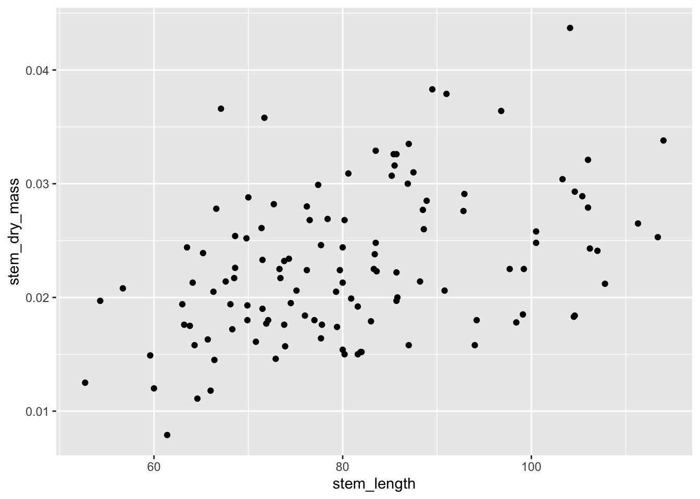
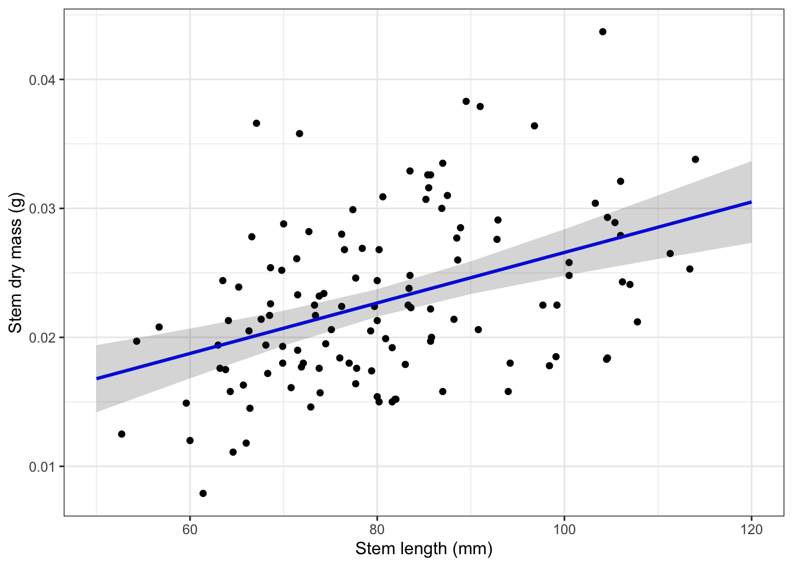
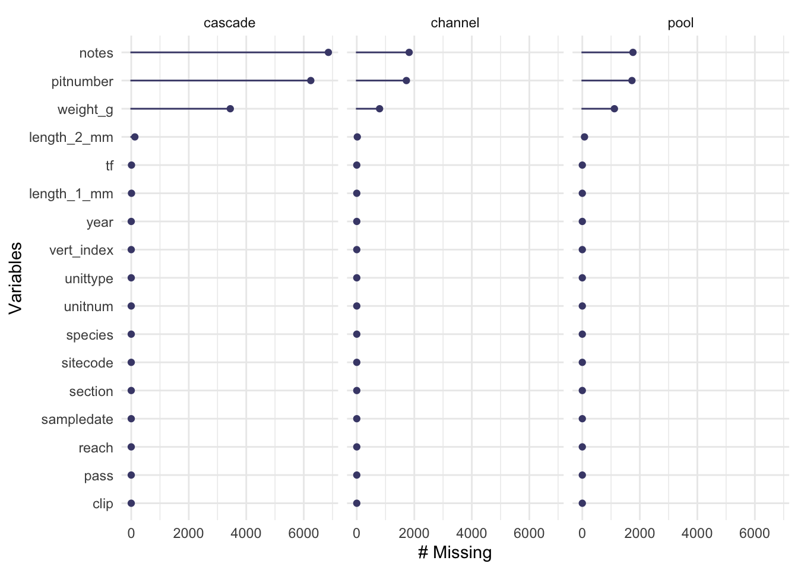
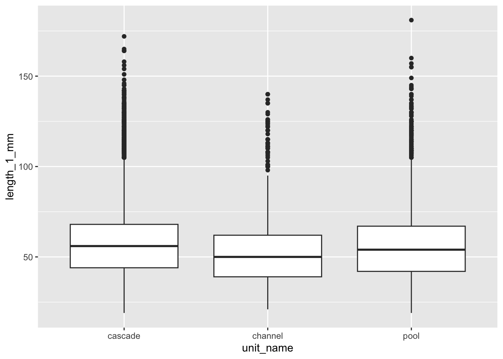
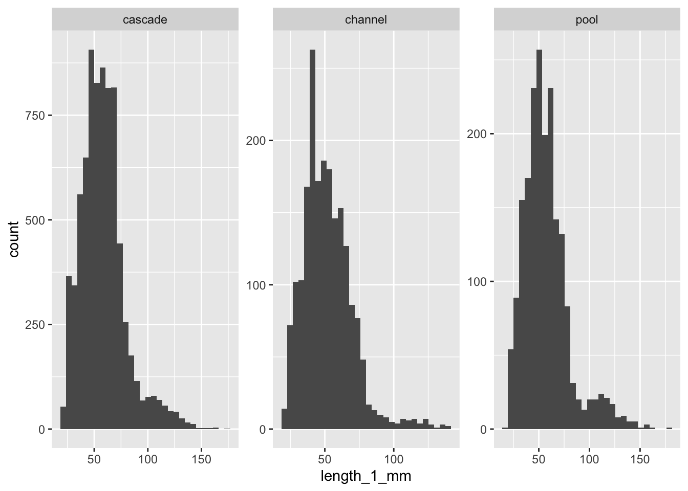
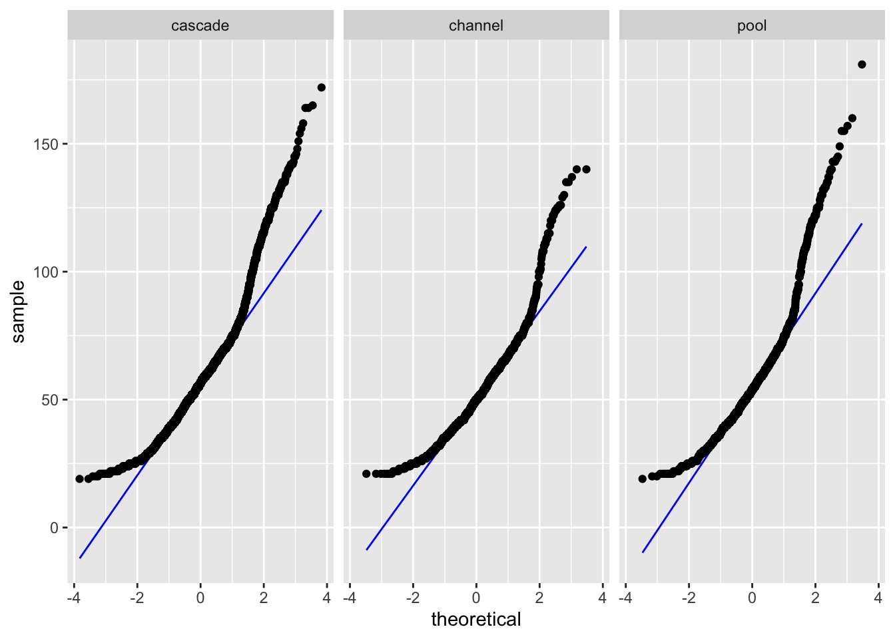
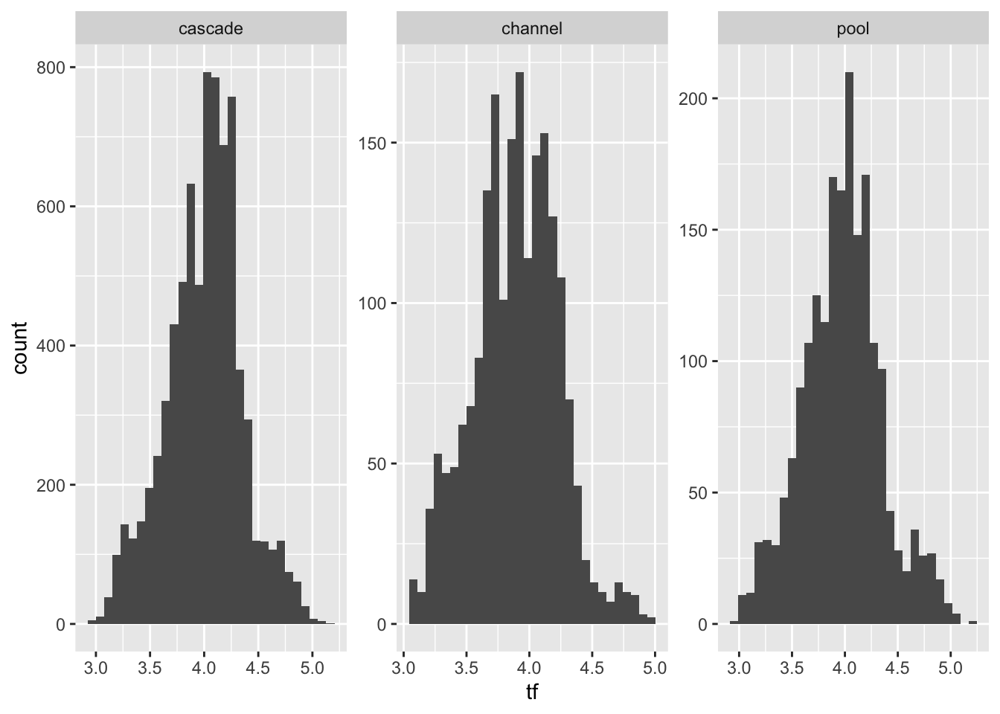
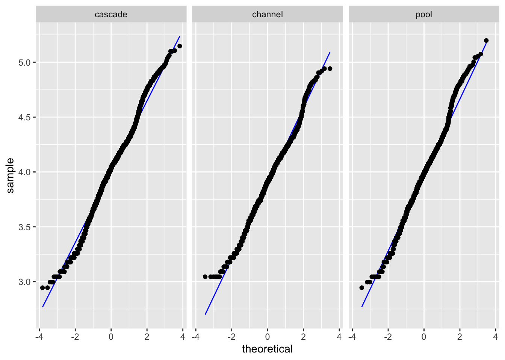
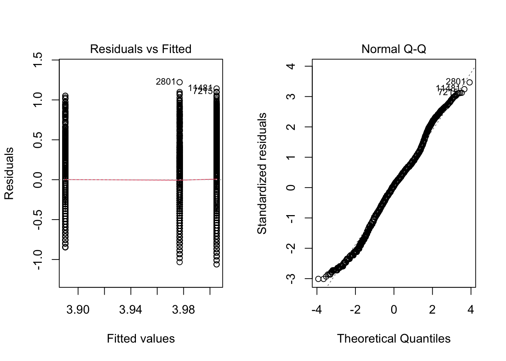

Code
# should haves
library(tidyverse)
library(here)
library(lterdatasampler)
# would be nice to have
library(performance)
library(broom)
library(flextable)
library(ggeffects)
library(car)# should haves
library(tidyverse)
library(here)
library(lterdatasampler)
# would be nice to have
library(performance)
library(broom)
library(flextable)
library(ggeffects)
library(car)How does stem length predict stem dry mass?
maples_data <- hbr_maples %>%
filter(year == 2003 & watershed == "Reference")Look at your data (we’ve looked at this data set before, so we won’t go through it now)
Then, create some exploratory data visualization:
ggplot(data = maples_data, aes(x = stem_length, y = stem_dry_mass)) +
geom_point()
Seems like there should be a relationship between dry mass and length! Let’s try a model:
modelobject <- lm(stem_dry_mass ~ stem_length, data = maples_data)# makes the viewer pane show a 2x2 grid of plots
# format: par(mfrow = c(number of rows, number of columns))
par(mfrow = c(2, 2))
plot(modelobject)
# turns off the 2x2 grid - pop this under the code chunk where you set the 2x2 grid
dev.off()# extract model predictions using ggpredict
predictions <- ggpredict(modelobject, terms = "stem_length")
predictions# Predicted values of stem_dry_mass
stem_length | Predicted | 95% CI
--------------------------------------
50 | 0.02 | [0.01, 0.02]
60 | 0.02 | [0.02, 0.02]
70 | 0.02 | [0.02, 0.02]
80 | 0.02 | [0.02, 0.02]
90 | 0.02 | [0.02, 0.03]
100 | 0.03 | [0.02, 0.03]
110 | 0.03 | [0.03, 0.03]
120 | 0.03 | [0.03, 0.03]plot_predictions <- ggplot(data = maples_data,
aes(x = stem_length, y = stem_dry_mass)) +
# first plot the underlying data from maples_data
geom_point() +
# then plot the predictions
geom_line(data = predictions,
aes(x = x, y = predicted),
color = "blue", linewidth = 1) +
# then plot the 95% confidence interval from ggpredict
geom_ribbon(data = predictions,
aes(x = x, y = predicted, ymin = conf.low, ymax = conf.high),
alpha = 0.2) +
# theme and meaningful labels
theme_bw() +
labs(x = "Stem length (mm)",
y = "Stem dry mass (g)")
plot_predictions
# store the model summary as an object
model_summary <- summary(modelobject)
# store the ANOVA table as an object
# anova(): special function to get analysis of variance tables for a model
model_squares <- anova(modelobject)
model_summary
Call:
lm(formula = stem_dry_mass ~ stem_length, data = maples_data)
Residuals:
Min 1Q Median 3Q Max
-0.0111253 -0.0039117 -0.0009091 0.0040911 0.0164587
Coefficients:
Estimate Std. Error t value Pr(>|t|)
(Intercept) 7.003e-03 3.212e-03 2.180 0.0312 *
stem_length 1.958e-04 3.909e-05 5.009 1.94e-06 ***
---
Signif. codes: 0 '***' 0.001 '**' 0.01 '*' 0.05 '.' 0.1 ' ' 1
Residual standard error: 0.005944 on 118 degrees of freedom
Multiple R-squared: 0.1753, Adjusted R-squared: 0.1683
F-statistic: 25.09 on 1 and 118 DF, p-value: 1.94e-06model_squaresAnalysis of Variance Table
Response: stem_dry_mass
Df Sum Sq Mean Sq F value Pr(>F)
stem_length 1 0.0008864 0.00088642 25.089 1.94e-06 ***
Residuals 118 0.0041691 0.00003533
---
Signif. codes: 0 '***' 0.001 '**' 0.01 '*' 0.05 '.' 0.1 ' ' 1model summary table:
# don't name this chunk! some intricacies with Quarto: do not name chunks with tables in them
model_squares_table <- tidy(model_squares) %>%
# round the sum of squares and mean squares columns to have 5 digits (could be less)
mutate(across(sumsq:meansq, ~ round(.x, digits = 5))) %>%
# round the F-statistic to have 1 digit
mutate(statistic = round(statistic, digits = 1)) %>%
# replace the very very very small p value with < 0.001
mutate(p.value = case_when(
p.value < 0.001 ~ "< 0.001"
)) %>%
# rename the stem_length cell to be meaningful
mutate(term = case_when(
term == "stem_length" ~ "Stem length (mm)",
TRUE ~ term
)) %>%
# make the data frame a flextable object
flextable() %>%
# change the header labels to be meaningful
set_header_labels(df = "Degrees of Freedom",
sumsq = "Sum of squares",
meansq = "Mean squares",
statistic = "F-statistic",
p.value = "p-value")
model_squares_tableterm | Degrees of Freedom | Sum of squares | Mean squares | F-statistic | p-value |
|---|---|---|---|---|---|
Stem length (mm) | 1 | 0.00089 | 0.00089 | 25.1 | < 0.001 |
Residuals | 118 | 0.00417 | 0.00004 |
Note! We didn’t get to analysis of variance in workshop on Wednesday. We will do it next week.
Do coastal giant salamander lengths differ by units?
sal <- and_vertebrates %>%
# filter for the species and unit type
filter(species == "Coastal giant salamander",
unittype %in% c("C", "P", "SC")) %>%
# creating a new column with the full unit name
mutate(unit_name = case_when(
unittype == "C" ~ "cascade",
unittype == "P" ~ "pool",
unittype == "SC" ~ "channel"
)) %>%
# transforming the length variable with a natural log
mutate(tf = log(length_1_mm))naniar::gg_miss_var(sal, facet = unit_name) 
sal_summary <- sal %>%
group_by(unit_name) %>%
summarize(mean = mean(length_1_mm, na.rm = TRUE),
sd = sd(length_1_mm, na.rm = TRUE),
count = length(length_1_mm),
se = sd/sqrt(count),
var = var(length_1_mm, na.rm = TRUE))
sal_summary# A tibble: 3 × 6
unit_name mean sd count se var
<chr> <dbl> <dbl> <int> <dbl> <dbl>
1 cascade 58.3 20.8 7697 0.238 435.
2 channel 51.8 18.0 1994 0.403 324.
3 pool 57.3 22.8 1943 0.517 520.# if the largest sample variance is < 4× the smallest sample variance, the variances are close enough# weirdness with quarto: don't name code chunks if they have tables in them!
flextable(sal_summary) %>%
set_header_labels(unit_name = "Unit name",
mean = "Mean length (mm)",
sd = "Standard deviation",
count = "Number of observations",
se = "Standard error",
var = "Variance")Unit name | Mean length (mm) | Standard deviation | Number of observations | Standard error | Variance |
|---|---|---|---|---|---|
cascade | 58.31985 | 20.84792 | 7,697 | 0.2376304 | 434.6357 |
channel | 51.77432 | 18.00636 | 1,994 | 0.4032398 | 324.2290 |
pool | 57.28358 | 22.80015 | 1,943 | 0.5172510 | 519.8469 |
ggplot(sal, aes(x = unit_name, y = length_1_mm)) +
geom_boxplot()
ggplot(sal, aes(x = length_1_mm)) +
geom_histogram() +
facet_wrap(~ unit_name, scales = "free")
ggplot(sal, aes(sample = length_1_mm)) +
stat_qq_line(color = "blue") +
stat_qq() +
facet_wrap(~ unit_name)
leveneTest(length_1_mm ~ unit_name, data = sal)Levene's Test for Homogeneity of Variance (center = median)
Df F value Pr(>F)
group 2 20.922 8.516e-10 ***
11622
---
Signif. codes: 0 '***' 0.001 '**' 0.01 '*' 0.05 '.' 0.1 ' ' 1# note different function from before!
sal_anova <- aov(length_1_mm ~ unit_name, data = sal)
summary(sal_anova) Df Sum Sq Mean Sq F value Pr(>F)
unit_name 2 67994 33997 79.07 <2e-16 ***
Residuals 11622 4996776 430
---
Signif. codes: 0 '***' 0.001 '**' 0.01 '*' 0.05 '.' 0.1 ' ' 1
9 observations deleted due to missingnessTukeyHSD(sal_anova) Tukey multiple comparisons of means
95% family-wise confidence level
Fit: aov(formula = length_1_mm ~ unit_name, data = sal)
$unit_name
diff lwr upr p adj
channel-cascade -6.545526 -7.766976 -5.3240763 0.0000000
pool-cascade -1.036267 -2.270380 0.1978461 0.1201769
pool-channel 5.509259 3.959921 7.0585969 0.0000000tables:
tidy(sal_anova)# A tibble: 2 × 6
term df sumsq meansq statistic p.value
<chr> <dbl> <dbl> <dbl> <dbl> <dbl>
1 unit_name 2 67994. 33997. 79.1 7.77e-35
2 Residuals 11622 4996776. 430. NA NA (if we have time)
ggplot(sal, aes(x = tf)) +
geom_histogram() +
facet_wrap(~ unit_name, scales = "free")
ggplot(sal, aes(sample = tf)) +
stat_qq_line(color = "blue") +
stat_qq() +
facet_wrap(~ unit_name)
leveneTest(tf ~ unit_name, data = sal)Levene's Test for Homogeneity of Variance (center = median)
Df F value Pr(>F)
group 2 6.103 0.002243 **
11622
---
Signif. codes: 0 '***' 0.001 '**' 0.01 '*' 0.05 '.' 0.1 ' ' 1log_anova <- aov(tf ~ unit_name, data = sal)
par(mfrow = c(1, 2))
plot(log_anova, which = c(1))
plot(log_anova, which = c(2))
dev.off()summary(log_anova) Df Sum Sq Mean Sq F value Pr(>F)
unit_name 2 20.9 10.431 83.95 <2e-16 ***
Residuals 11622 1444.1 0.124
---
Signif. codes: 0 '***' 0.001 '**' 0.01 '*' 0.05 '.' 0.1 ' ' 1
9 observations deleted due to missingnessTukeyHSD(log_anova) Tukey multiple comparisons of means
95% family-wise confidence level
Fit: aov(formula = tf ~ unit_name, data = sal)
$unit_name
diff lwr upr p adj
channel-cascade -0.11470205 -0.13546713 -0.093936962 0.0000000
pool-cascade -0.02803709 -0.04901746 -0.007056729 0.0049454
pool-channel 0.08666495 0.06032566 0.113004248 0.0000000@online{bui2023,
author = {Bui, An},
title = {Coding Workshop: {Week} 7},
date = {2023-05-17},
url = {https://an-bui.github.io/ES-193DS-W23/workshop/workshop-07_2023-05-17.html},
langid = {en}
}